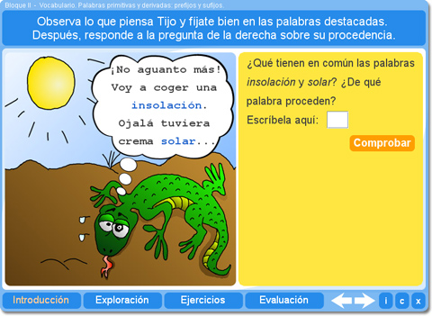
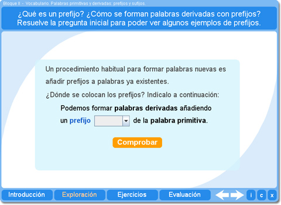
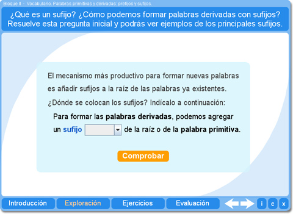
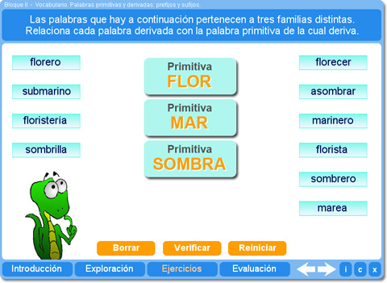
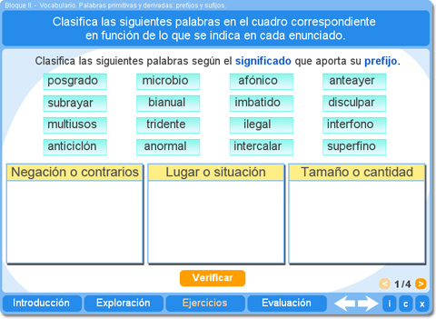
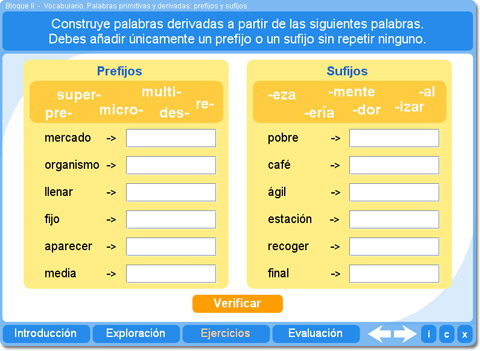
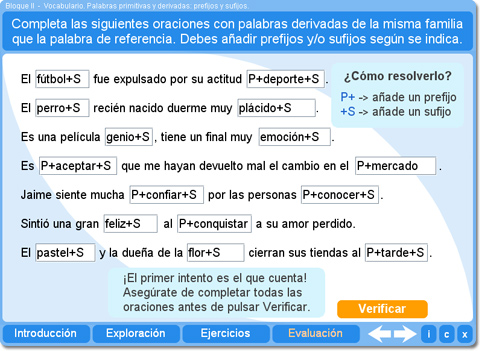

Objetivo
Presentar las palabras primitivas y derivadas, y que el alumno aprenda y practique la formación de palabras derivadas utilizando prefijos y sufijos.
Instrucciones generales
Se puede navegar entre los apartados con el menú de la parte inferior. Este menú aparece a lo largo de todo el interactivo y conserva su funcionalidad.

También se puede navegar por las escenas por medio de las flechas de navegación que aparecen en el lado inferior derecho del interactivo. Dentro de los apartados Exploración y Ejercicios es necesario utilizar estas flechas para acceder a las escenas sucesivas de dichos apartados.

En la parte inferior derecha del interactivo se encuentran los siguientes botones:
| Muestra la documentación del interactivo. | |
| Despliega los créditos correspondientes a este interactivo. | |
| Cierra el interactivo. |
Contenidos
Introducción
Enseña a identificar las palabras primitivas y derivadas, y explica cómo se forman nuevas palabras a partir de otras.

Exploración 1
Muestra ejemplos de los principales prefijos y explica qué significado aporta cada uno a las palabras derivadas.

Exploración 2
Presenta ejemplos de los principales sufijos y de los significados que pueden aportar a las palabras derivadas.

Ejercicio 1
El alumno debe relacionar varias palabras derivadas con la palabra primitiva de la cual proceden.

Ejercicio 2
El alumno debe clasificar palabras en función de distintos criterios: para separar palabras primitivas de derivadas, según el significado de su prefijo o de su sufijo, o para indicar si una palabra derivada tiene prefijo, sufijo o ambos. Los cuatro ejercicios se presentan aleatoriamente.

Ejercicio 3
Permite practicar la formación de palabras derivadas a partir de otras palabras añadiendo un sufijo o un prefijo. Sólo puede utilizar cada uno de los elementos disponibles una sola vez.

Evaluación
El alumno debe completar oraciones escribiendo palabras derivadas que encajen con el significado de la frase. Se ofrecen palabras de referencia e indicaciones sobre si debe añadirse un prefijo, un sufijo o ambos. Es importante que el alumno resuelva todo el ejercicio antes de Verificar para poder evaluar sus conocimientos.

| Los materiales aquí presentados utilizan el applet Descartes Web 2.0. | |

|
Los contenidos de esta unidad didáctica están bajo una licencia de Creative Commons. |